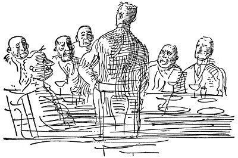

Bardağı hiç dokunulmamış olarak önünde soğuyan Ward, “Zihni açar, zihni açar,” diyordu.
Yargıç Planet sessizce purosunu tüttürüyordu.
“Şey, bayım,” dedi. “Sizi gördüğüme çok sevindim.”
Tam o sırada Morton, bir deri bir kemik, patlak gözlü, ip gibi boyunbağının üzerinden âdemelması fırlamış bir adamın, Mr. Barrow'un geldiğini bildirdi. Sinirli bir konuşma biçimi vardı adamın, durmadan sigara içiyordu. Her yanı, yüzü, parmakları, dişleri sapsarı nikotin lekeleriyle kaplıydı.
Ward'ın masasındaki başka kartta da şunlar yazılıydı:
Barrow, G. H., işçi ilişkileri, reformcu tip. Bir ara lokomotif makinistleri sendikası ikinci başkanı; güvenilmez.
Ayağa kalkarken kartın arkasını çevirdi. Mr. Barrow'la da tokalaştıktan, onun da başına bir bardak çay sardırıp ışığın karşısına yerleştirdikten sonra konuşmaya başladı.
“Sermaye, işçiler,” diye sanki yazı yazdırıyormuş gibi ağır ağır, özenli bir sesle söze girdi, “değişik ve yararlı çalışmalarınız boyunca, baylar, görmüş olmanız gerektiği gibi biri olmadan öbürünün de olamayacağı, ulusal hayatımızın bu iki dev gücü günden güne birbirlerinden kopuyor. Hangi gazeteye şöyle göz atsanız görebilirsiniz bunu. Bana öyle geliyor ki olayların böylesine üzücü bir biçim almasının nedenlerinden biri de, durumu kamuoyuna açık seçik biçimde sunacak olan özel kuruluşun eksikliğidir. Gerekli bilgi dağılımından yoksunluk, yeryüzündeki yanlış anlaşılmaların çoğunun nedenidir . . . Sizin de büyük olasılıkla anlamış olduğunuz gibi, Mr. Barrow, Amerikan sermayesinin büyük önderleri, eşit koşullarda, hakça yapılacak işlerden, demokrasiden yanadırlar. Yalnızca kamunun ve yatırımcılarının hakkını yemeksizin bunu nasıl yapacaklarını bilseler, kazançlarından paylarına düşeni işçilere seve seve verirler. Her şey bir yana, kamu, hepimizin hizmet götürmeyi amaçladığımız yatırımcıdır.”
“Kimi zaman,” dedi Mr. Barrow, “ama çok ender olarak . . .”
“Belki birer viski-soda alırsınız, efendim.” Morton ipeksi saçlarıyla ikisinin arasında duruyordu, elindeki tepside sürahiler, içleri buz dolu uzun bardaklar, açılmış Apollinaris şişeleri vardı.
Yargıç Planet, “Ben içerim,” dedi.
İkisinin de önüne şıngırdayan birer bardak bırakarak dışarı süzüldü Morton. Dışarda akşamın çökmesiyle gökyüzü kızıla boyanıyordu. Odanın içinde hava şarap rengiydi. Bardaklardan, her şeyin üstüne pırıltılar düşüyordu. Yargıç yeni bir puronun ucunu çiğnemeye başlamıştı.
“Şimdi, bakalım sizi doğru anladım mı, Mr. Moorehouse. Reklamcılıkla ve büyük işletmelerle ilişkileriniz sayesinde, barışçı, dostça biçimde işçi sorunlarının çözümüne yardımcı olacak yeni bir alan açmak istiyorsunuz, bunu da bir şirket aracılığıyla yapacaksınız. Yalnız şunu bilmek istiyorum, nasıl yapacaksınız?”
İskemlesinin ucundan öne doğru eğilen G. H. Barrow, “Örgütlenmiş emeğin böylesine bir çalışmaya katılacağına inanıyorum,” dedi. “Ancak güvenebilirlerse . . . şey, şeye . . .”
Yargıç gülerek, “Gözlerinin boyanmadığına,” dedi.
“Tam anlamıyla.”
“Bakın baylar, kartlarımı açık oynayacağım, işimi üzerine kurmuş olduğum büyük ilkem, her zaman işbirliği olmuştur.”
Yargıç yeniden güler, dizine vururken, “Sizinle bu konuda bütünüyle aynı düşüncedeyim,” dedi. “Zor olan sorun bu mutlu sonuca nasıl ulaşacağımızdır.”
“Evet, ilk adım, ilişki kurmaktır . . . İşte bu an, gözlerinizin önünde kurulmakta olan dostça ilişki duruyor.”
G. H. Barrow tedirgin bir gülüşle, “Açıkça söylemeliyim ki,” dedi, “Planet ve Wilson firmasının bir üyesiyle içki içeceğim aklıma bile gelmezdi.”
Yargıç, şişman bacağına vurdu. “Şu Colorado sorunu yüzünden mi demek istiyorsunuz?.. Korkmanız gerekmez. Sizi yemem, Mr. Barrow . . . Ama içtenlikle söyleyeyim, Mr. Moorehouse, küçük tasarınızı uygulamaya koymak için uygun zamanı seçtiğinizden kuşkuluyum.”
G. H. Barrow, “Avrupa'daki şu savaş . . .” diye söze başladı.
“Amerika'nın eline geçmiş büyük bir olanaktır . . . Hırsızların ne zaman birbirlerine girdiği konusundaki atasözünü biliyorsunuz . . . Şimdilik kuşku ve umutsuzluk içinde bulunduğumuzu söylemeliyim, ama Amerikan iş dünyası ilk sarsıntıyı atlatır atlatmaz, kendini toplar toplamaz . . . Bakın baylar, ben Avrupa'dan daha yeni geldim. Eşimle, İngiltere'nin savaş açtığı gün oradan ayrıldık . . . Kıl payı kurtulduğumuzu söyleyebilirim . . . Göreceli bir kesinlikle bir şey biliyorum, kim kazanırsa kazansın Avrupa büyük bir ekonomik çöküntüye uğrayacaktır. Bu savaş Amerika'nın eline geçmiş büyük bir olanaktır. Bizim tarafsız kalmamız gerçeği . . .”
“Savaş gereçleri yapanların dışında, kimin kazançlı çıkacağını bilemiyorum,” dedi G. H. Barrow.
Ward uzun süre konuştu, sonra önünde duran saatine baktı, ayağa kalktı. “Baylar, özrüm nedeniyle beni bağışlamanızı isteyeceğim. Akşam yemeği için giyinmem gerekiyor.” Morton, elinde adamların şapkalarıyla gelmiş masanın başında duruyordu bile. Oda kararmıştı. Ward, azarlar gibi sesle, “Işıklar, lütfen, Morton,” dedi.
Dışarı çıktıkları sıra, Yargıç Planet, “Çok hoş bir söyleşiydi, Mr. Moorhouse ama, tasarılarınız bana biraz ülkücü görünüyor,” dedi.
“İşçilerin durumundan böylesine sevecenlikle, açıklıkla söz eden işadamına hemen hiç rastlamadım,” dedi G. H. Barrow.
“Yalnızca adlarına çalıştığım kişilerin duygularını dile getiriyorum,” dedi Ward, başını eğerek onları uğurlarken.
Ertesi gün Rotary Kulüp'ün verdiği yemekte, “İşçi Sorunları ve Çözüm Yolu” konulu bir konuşma yaptı. Büyük bir otelin yemek ve sigara dumanı kokulu, garsonlarının ivecenlikle koşturdukları şölen salonunda, uzun bir masanın başında oturuyordu. Kendisine bir şey söylendiğinde yanıtlayarak, karşısında oturan Yargıç Planet'le arada bir şakalaşarak, kafasındaki kopuk cümlelerin sisi içinden anlamlı cümleler kurmaya çalışarak, çatalıyla yemeğini tabağının orasına burasına dağıtıyordu. Sonunda ayağa kalkması gereken an geldi. Kendisine dönmüş olan iki dizi gerdanlı yüze bakarak, elinde puroyla masanın başında durdu.

“Delaware'de küçük bir çocukken . . .” Durdu. Garsonların hâlâ ellerinde tepsilerle seğirttikleri yaylı kapıların arkasından korkunç bir tabak şangırtısı geliyordu. Onları susturmak için kapıya gitmiş olan adam usulca geri döndü. Parke döşemede ayakkabılarının gıcırtısı duyulabiliyordu. Masa boyunca adamlar öne eğildiler. Ward yeniden başladı. Şimdi konuşmasını sürdürüyordu, neler söylediğinin pek de farkında değildi ama onları güldürmüştü: Gerilim rahatlamaya dönüştü. “Amerikan iş dünyası, çağdaş reklamcılığın olanaklarından yararlanmada yavaş davranmıştır . . . hepsi de eşit ölçüde halkın hizmetinde olan işverenleri, işçileri, kamuyu eğitmek . . . İşbirliği . . . İşçiye sanayi kazançlardan pay veren hisse senedi satımı . . . sosyalizmin, demagojinin, daha da kötü şeylerin ciddi tehlikelerinden sakınmak . . . İşte böylesine durumda halkla ilişkiler danışmanı işe karışarak, soğukkanlı, erkekçe tavırla şöyle diyebilir: Bana bak, dostum, bu konuyu içtenlikle bir kez daha konuşalım . . . Ama bu kişinin temel önemi, sanayi barışı döneminde ortaya çıkar . . . İki kişi birbirine karşı kırgınlık doluysa, sille tokat girişmek üzereyse onlara hizmetler öğütlemenin zamanı değil demektir . . . Çağdaş Amerikan sanayiinin Güçlü Anıt'ının sıradan insanlardan oluşma bölümünü yuvaya döndürecek olan eğitim seferberliğinin, sözlü haçlı seferleri çağı şimdi, bugün gelip çatmıştır.”
Uzun uzun alkışlandı. Yerine oturdu, mavi gözlü gülümsemesiyle Yargıç Planet'in yüzünü inceledi. Yargıç Planet, etkilenmiş görünüyordu.